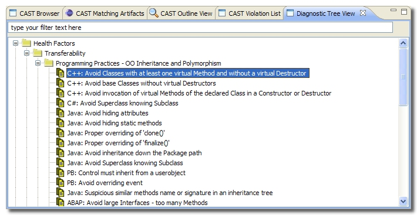

The Diagnostic Tree View displays the CAST Assessment Model so that you can browse the Quality Rules and see which category they belong to. The information is taken directly from the CAST Dashboard Service:
